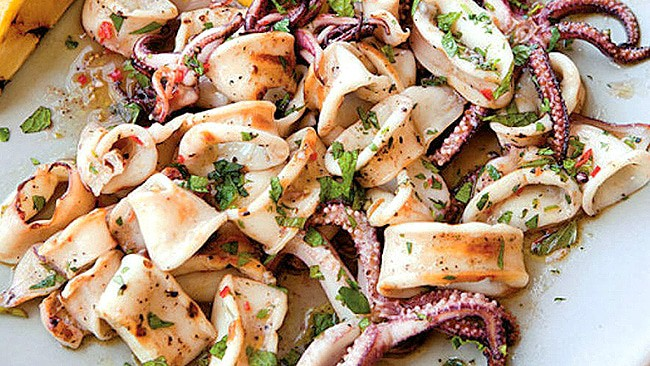
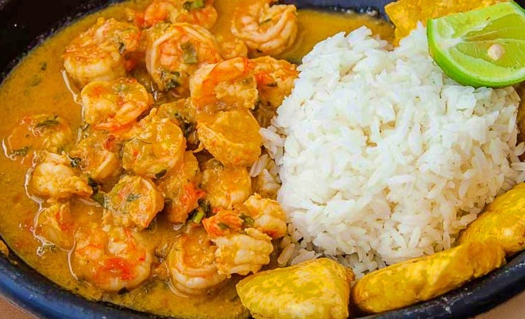
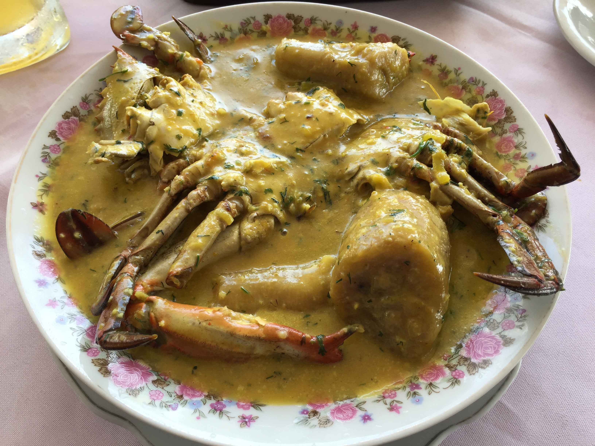
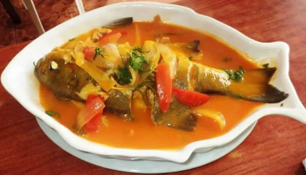
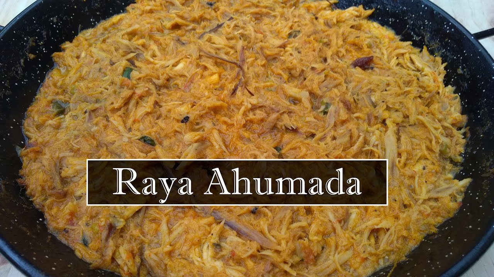

platos tipicos del pacifico
| nombres |
imagen |
ingrediente principal |
costo |
restaurantes |
contacto |
| ensalada de calamar |
 |
2 libras de calamar |
15.000 mil pesos |
sabor tradicional |
3125142433 |
| encocado de camaron |
 |
5 libras de camaron |
25.000 mil pesos |
sabor tradicional |
3125142433 |
| encocado de jaiba |
 |
7 libras de jaiba |
30.000 mil pesos |
sabor tradicional |
3125142433 |
| sudado de pescado |
 |
4 libras de pescado |
24.000 |
sabor tradicional |
3125142433 |
| raya ahumada |
 |
3 libras de raya |
28.000 mil pesos |
sabor tradicional |
3125142433 |